8. Statics & Torque#
Sep 13, 2026 | 4897 words | 33 min read
What does a car moving at constant velocity and a desk have in common?
In the eyes of a physicist, they both have an acceleration of zero. Recall that Newton’s second law states \(\vec{F}_{\rm net} = m\vec{a}\). This means that the net external forces is zero for all stationary objects (e.g., the desk) and for all objects at constant velocity (e.g., the car). There are forces acting but they are balanced or in equilibrium.
Statics
Statics is the study of forces in equilibrium, which is a large group of situations that makes up a special case of Newton’s second law.
8.1. The First Condition for Equilibrium#
The first condition necessary for equilibrium is that the net external force on the system must be zero. If the \(\vec{F}{\rm net} = 0\), then the net external force in any direction is zero. Mathematically, this is represented by
Figures 8.1 and 8.2 illustrate situations where \(\vec{F}_{\rm net} = 0\) for both static equilibrium (motionless) and dynamic equilibrium (constant velocity).
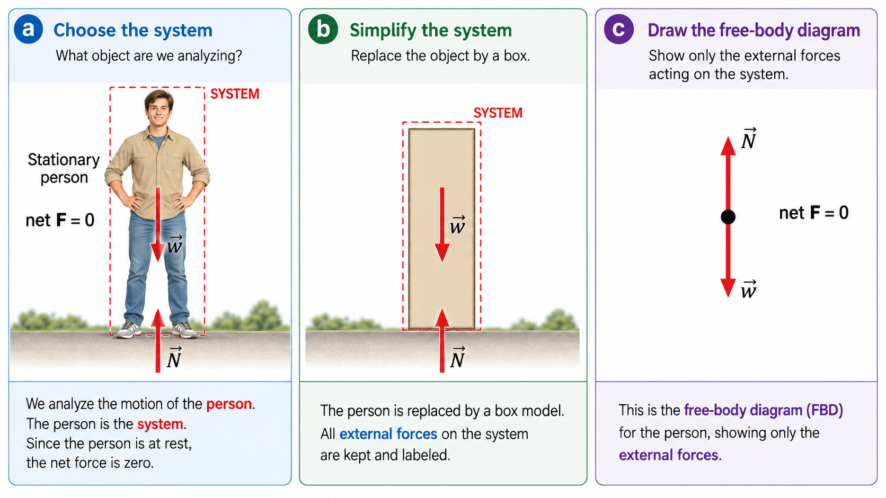
Fig. 8.1 Static equilibrium. A stationary person is chosen as the system and then progressively simplified to construct a free-body diagram. In (a), the person is enclosed by the system boundary and the normal force \(\vec{N}\) and weight \(\vec{w}\) are identified as the external forces. In (b), the physical details of the person are replaced by a box while the same forces are retained. In (c), the system is reduced to a point and only the external-force vectors remain. Because \(\vec{N}\) and \(\vec{w}\) are equal in magnitude and opposite in direction, the net force is zero. Adapted from: OpenStax, College Physics 2e, Figure 9.2.#
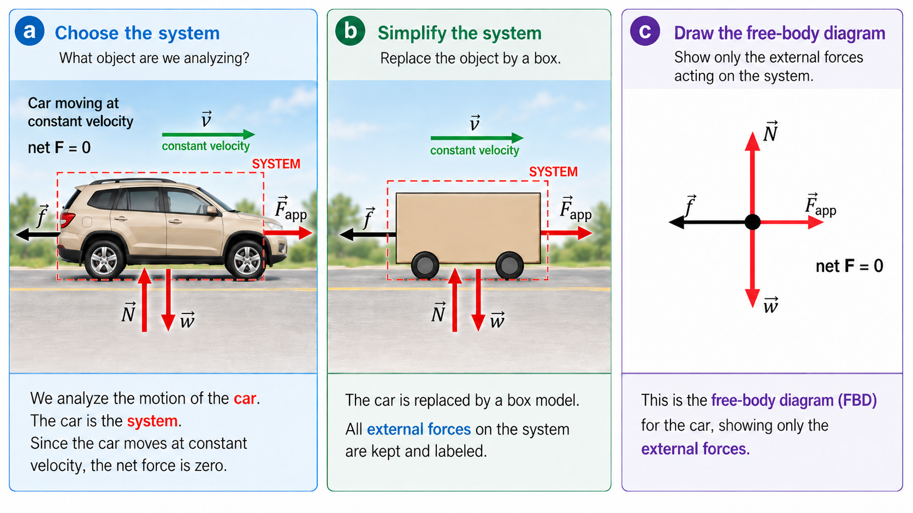
Fig. 8.2 Dynamic equilibrium. A car moving at constant velocity is chosen as the system and progressively simplified to construct its free-body diagram. In (a), the applied force \(\vec{F}_{\rm app}\), friction \(\vec{f}\), normal force \(\vec{N}\), and weight \(\vec{w}\) are identified as the external forces acting on the car. In (b), the car is replaced by a box while the same forces are retained. In (c), only the external-force vectors remain. The horizontal forces balance one another, as do the vertical forces, so the net force is zero even though the car is moving. Adapted from: OpenStax, College Physics 2e, Figure 9.3.#
A zero net force tells us that the translational acceleration of a system is zero. For an extended object, however, this does not necessarily mean that the object cannot turn. Recall from our discussion of circular motion that an object can rotate about a fixed center while points on the object move along circular paths. Therefore, we also need to consider where the forces are applied.
Consider the two situations shown in Fig. 8.3. In both cases, two equal and opposite forces act on a record, so the net external force is zero. In Fig. Fig. 8.3a, the forces act along the same line through the center of the record. The record remains stationary, so it is in equilibrium. In Fig. Fig. 8.3b, the same forces act at different locations. The center of the record still does not accelerate because the forces balance, but the record begins to turn.
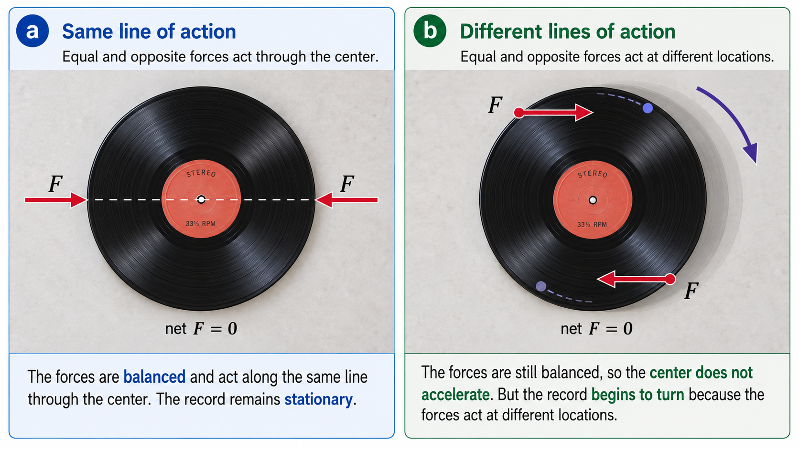
Fig. 8.3 Equal and opposite forces applied to a record. In (a), the forces act along the same line through the center, so the record remains stationary and \(\vec{F}_{\rm net}=0\). In (b), the same equal and opposite forces act at different locations. The net force is still zero, so the center does not accelerate, but the record begins to turn. This illustrates that zero net force is necessary but not sufficient for equilibrium. Adapted from: OpenStax, College Physics 2e, Figures 9.4 and 9.5.#
This example shows an important limitation of the first condition for equilibrium. The condition
is sufficient to prevent translational acceleration, but it does not by itself prevent an extended object from changing its rotational motion. The location at which a force acts therefore matters.
8.2. The Second Condition for Equilibrium#
The second condition necessary to achieve equilibrium involves maintaining a constant angular velocity (or zero angular acceleration). A rotating body or system can be in equilibrium if its rate of rotation is constant and remains unchanged by the forces acting on it.
Several factors determine how effective (or easy) you are in opening a door.
The larger the force, the more effective it is in opening a door. The harder you push, the faster the door moves to open.
The point at which you push is critical. If you apply your force too close to the hinges, the door will open slowly, if at all.
The direction in which you push is important. The most effective direction is perpendicular to the door.
Torque
The magnitude, direction, point of application of the force combine to define the torque. Torque is the rotational equivalent of a force, where it is written mathematically as
where \(\tau\) is the torque, \(r\) is the distance from the pivot to the point where the force \(F\) is applied, and \(\theta\) is the angle between the distance \(r\) and the force \(F\).
An alternative expression for torque is given in terms of the perpendicular lever arm \(r_\perp\), which is defined as
so that
The perpendicular lever arm \(r_\perp\) is the shortest distance from the pivot point to the line where the force \(F\) acts.
The SI unit of torque is newtons time meters, usually written as \(\rm N\dot m\) (${\rm N\cdot m}$ in Markdown). If you push perpendicular to a door with a force of \(40\ {\rm N}\), where the force is applied about \(0.8\ {\rm m}\) from the hinges, then we can calculate the torque by
relative to the hinges. If you reduce the force to \(20\ {\rm N}\), then the torque is half as much, or \(16\ {\rm N\cdot m}\). The magnitude of the torque \(\tau\) is proportional (in part) to the applied force \(F\).
The torque is always calculated relative to some chosen pivot point. For the same applied force, a different choice for the location of the pivot will give you a different magnitude for the torque. Both \(r\) and \(\theta\) are defined relative to the location of the pivot.
Warning
Any point in any object can be chosen to calculate the torque about that point. The object may not actually pivot about the chosen “pivot point”.
The torque at the pivot is zero because the distance \(r=0\).
Torque has two possible directions: clockwise or counterclockwise relative to the chosen pivot point. A common convention defines the counterclockwise (ccw) torque as positive, while the clockwise (cw) torque is negative. Torques assigned in opposite directions have opposite signs.
The second condition for equilibrium requires that the net external torque on a system must be zero. An external torque is one that created by an external force. You can choose the point around which the torque is calculated.
The point can be the physical point of a system or any other point in space. However, it must be the same point for all the calculated torques for that system. If the net external torque is zero for one choice of the pivot point, then it will hold true for any other choice of pivot point (within an inertial frame of reference). The second condition necessary for equilibrium is stated in equation form as
Two children (of unequal weight: \(w_1\) and \(w_2\)) balanced on a seesaw satisfy both conditions for equilibrium. To balance the seesaw, the heavier child (\(w_2\)) must sit closer to the pivot compared to the lighter child (\(w_1\)).
If we choose the center as the pivot point, then we measure the distance from pivot for each child as \(r_1\) and \(r_2\), respectively. Each child feels the gravitational force through their weight, so that each has a torque
The weight of each child is perpendicular to the seesaw, which means \(\theta_i = 90^\circ\), or \(\sin{\theta_i} = 1\). To determine the sign for each torque:
point your fingers (on your right hand) from the pivot to the point where the force \(F_i\) is perpendicular to \(r_i\),
curl your fingers in the direction of the applied force \(F_i\).
The direction in which your fingers curl determines the sign: counterclockwise (positive) or clockwise (negative). The net torque is then calculated for equilibrium as
This example provides some insights:
The choice of the pivot point can simplify the problem.
The torque at the pivot is due to the force \(\vec{F}_p\) and has \(r_\perp = 0\), so the torque is zero.
The weight of each child is distributed over an area of the seesaw, but we can treat the weights acting over a single point. The distances \(r_1\) and \(r_2\) are the distances to point directly below the center of gravity of each child.
Torque plays the same role in rotational motion that force plays in linear motion.
8.3. Stability#
In contrast to Mario World, the real world does not have bricks in equilibrium in the sky. If a brick were placed in the sky, it would be in an unstable state because it would immediately move under the pull of gravity. Other objects can be oriented in a specific way so that they can achieve equilibrium, but they are not in a stable equilibrium. There are three types of equilibrium: stable, unstable, and neutral.
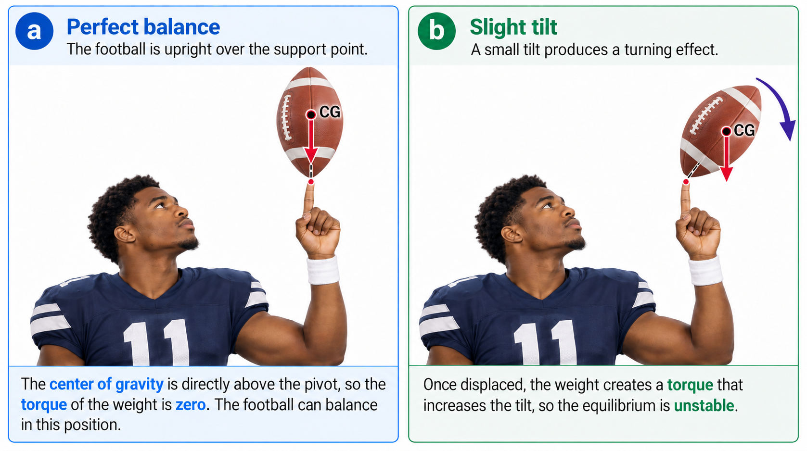
Fig. 8.4 Unstable equilibrium for a balanced football. In (a), the football is balanced upright on the player’s fingertip, so the center of gravity lies directly above the support point and the torque due to the weight is zero. In (b), a slight tilt shifts the line of action of the weight away from the support point, producing a torque that increases the displacement. This illustrates an example of unstable equilibrium. Adapted from: OpenStax, College Physics 2e, Figure 9.9.#
Figure 8.4 demonstrates two configurations of the same system: (a) a football balanced upright on a player’s fingertip and (b) the same football after a small tilt. In Fig. 8.4a, the center of gravity (\({\rm CG}\)) of the football lies directly above the pivot point. If \(\theta\) is the angle that the football is tilted from the vertical, then \(\theta=0^\circ\) and the weight produces no torque about the pivot:
In Fig. 8.4b, the football has been tilted so that its \({\rm CG}\) is no longer directly above the pivot. The weight now has a nonzero lever arm and produces a net torque,
that causes the football to tilt farther away from its original position. The perfectly upright football is therefore an example of unstable equilibrium: although it can momentarily satisfy the conditions for equilibrium, even a small displacement produces a torque that increases the displacement.
A system is said to be in stable equilibrium if, when displaced from equilibrium, it experiences a net force or torque in a direction opposite to the displacement. For example, a marble at the bottom of a bowl experiences a restoring force when displaced from its equilibrium position. This force moves the marble back toward equilibrium. Another example of stable equilibrium can occur for a gymnast (see Figure 8.5a).
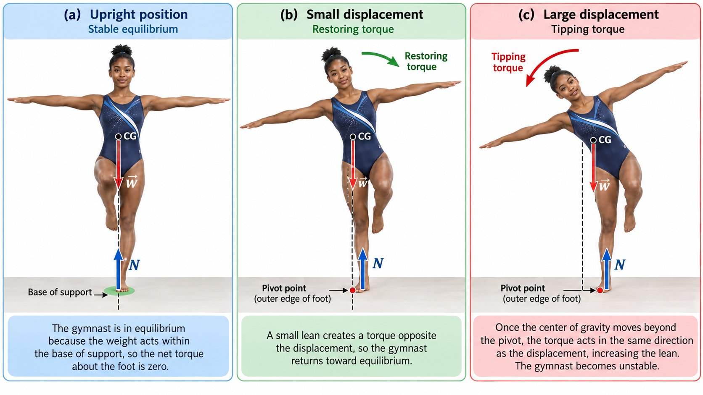
Fig. 8.5 Stable equilibrium and the limits of stability. In (a), the gymnast is upright on one foot with the line of action of her weight passing through the base of support, so the net torque is zero. In (b), a small sideways displacement shifts the center of gravity but leaves the line of action of the weight on the restoring side of the pivot at the outer edge of the foot. The resulting torque acts opposite the displacement and tends to return the gymnast toward equilibrium. In (c), a larger displacement moves the line of action of the weight beyond the pivot. The torque then acts in the same direction as the displacement, causing the gymnast to tip farther from equilibrium. Adapted from: OpenStax, College Physics 2e, Figures 9.10–9.12.#
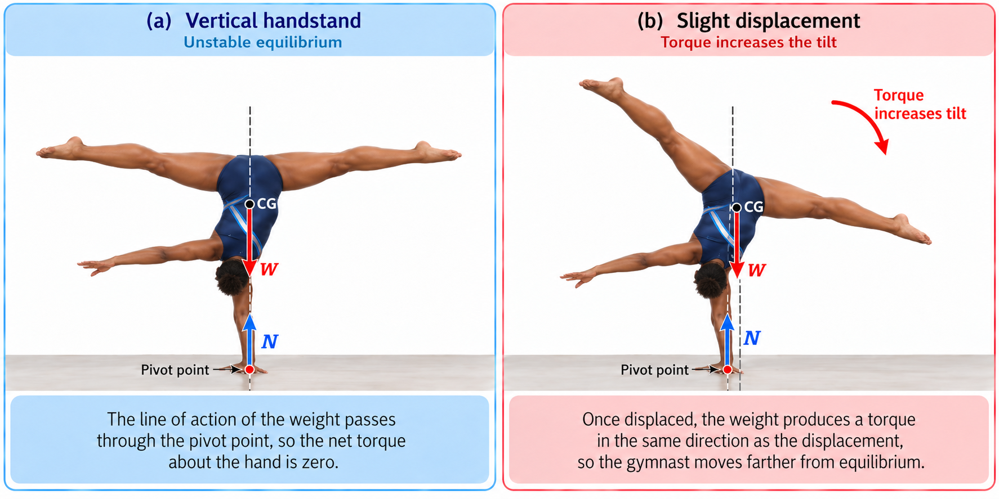
Fig. 8.6 Unstable equilibrium in a one-handed handstand. In (a), the gymnast is balanced so that the line of action of her weight passes through the supporting hand, which serves as the pivot, and the net torque about that point is zero. In (b), a small displacement shifts the center of gravity so that the weight no longer acts through the pivot. The resulting torque acts in the same direction as the displacement and increases the tilt. The balanced handstand is therefore an example of unstable equilibrium. Adapted from: OpenStax, College Physics 2e, Figures 9.13–9.14.#
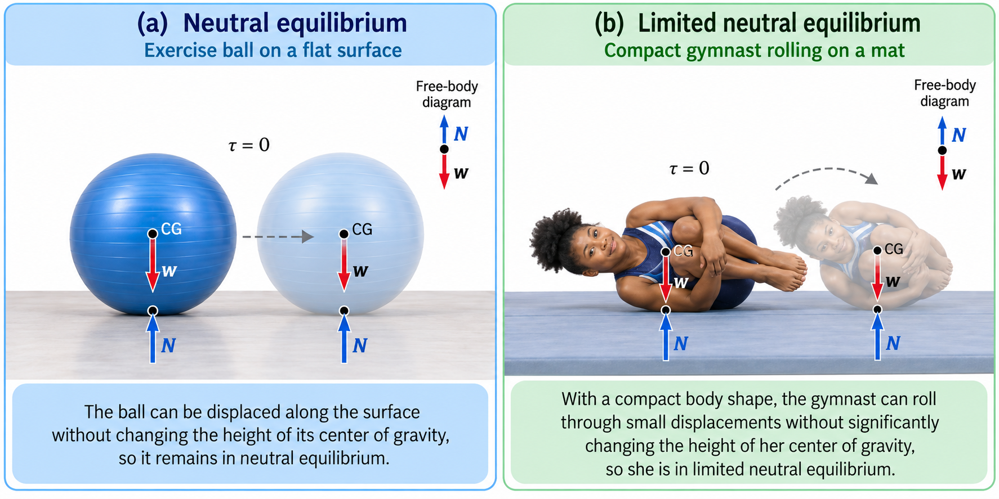
Fig. 8.7 Neutral and limited neutral equilibrium. In (a), an exercise ball can be displaced along a flat surface without changing the height of its center of gravity. The weight and normal force remain aligned, so no net torque develops and the ball is in neutral equilibrium. In (b), a gymnast with her arms tucked and legs together forms a compact shape that can roll through small angular displacements without substantially changing the height of her center of gravity. Over this limited range, the weight and normal force remain approximately aligned and the gymnast is in limited neutral equilibrium. Adapted from: OpenStax, College Physics 2e, Figure 9.15.#
A system is in unstable equilibrium, if a net force or torque in the same direction as the displacement from equilibrium when displaced. An unstable equilibrium can be prevented when there is a restoring torque applied, typical of small displacements (see Figure 8.5b). However, the unstable equilibrium continues under a large enough displacement (see Figure 8.5c). Figure 8.6 illustrates two other examples of unstable equilibrium. In panel (a), stability is achieved only in the case of perfect alignment. Panel (b) shows that a displacement away from alignment produces a torque in the direction of the displacement.
Another simple example is a ball resting on top of a hill, where it accelerates away from the crest once displaced.
The stability examples above describe how forces and torques can passively return a system toward equilibrium. Humans can also actively respond when balance is lost. In this video, Steve Mould explores how rapid arm motion can help redirect the body’s rotational motion and prevent a fall.
The video introduces ideas involving angular momentum that we will study more fully later. For now, focus on the connection between losing balance, rotational motion, and the body’s attempt to return toward an upright position.
A system is in neutral equilibrium if its equilibrium is independent from its original position. The exercise ball (in Figure 8.7a) on a flat surface. A gymnast can also have neutral equilibrium when here arms and legs are tucked in because she can roll in one direction easily, but not in another direction.
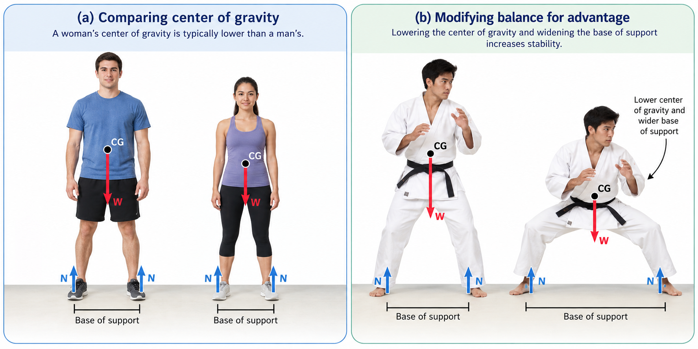
Fig. 8.8 Center of gravity and base of support in human stability. In (a), the center of gravity of the woman is shown slightly lower than that of the man, while both remain above their bases of support. In (b), a martial artist lowers the center of gravity and widens the base of support to gain stability. This helps illustrate why body position can strongly affect balance and resistance to tipping. Adapted from: OpenStax, College Physics 2e, Figure 9.16.#
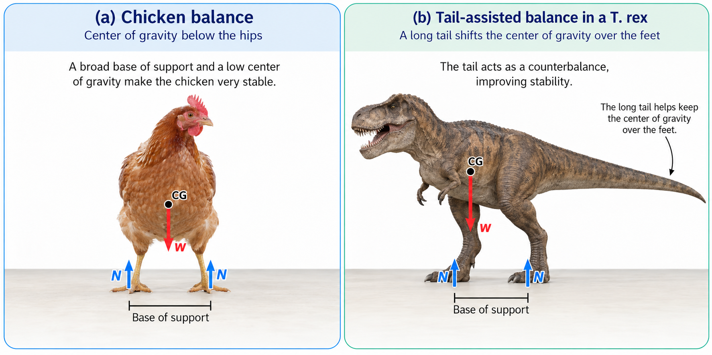
Fig. 8.9 Animal examples of balance and stability. In (a), the chicken has a broad base of support and a center of gravity below the hips, which makes it very stable. In (b), the long tail of a T. rex acts as a counterbalance that helps keep the center of gravity over the feet. Together, these examples show how body shape and mass distribution can improve stability. Adapted from: OpenStax, College Physics 2e, Figure 9.17.#
When we consider how far a system in stable equilibrium can be displaced before it becomes unstable, some systems (e.g., Fig. 8.5a or 8.8a) can become unstable for relatively small displacements to the side. The critical point is reached when the \(\rm CG\) is no longer above the base of support.
Because the \(\rm CG\) of a person’s body is above the pivots in the hips, displacements must be controlled quickly by the central nervous system. This skill is developed as we learn to stand and walk. Stability can be increased by spreading the feet farther apart, which widens the base of support, or by lowering the center of gravity (see Fig. 8.8b). A cane, crutch, or walker similarly increases stability by widening the effective base of support.
Chickens have a body structure that makes balance easier to maintain. Figure 8.9a shows that the \(\rm CG\) of a chicken lies below its hip joints and between its widely separated feet. Even relatively large displacements of the chicken’s \(\rm CG\) can therefore remain stable, with restoring forces and torques tending to return the body toward its equilibrium position.
The T. rex in Fig. 8.9b provides an interesting comparison. Like a chicken, it was a biped, but its large head and torso extended far in front of the hips. The long, massive tail acted as a counterbalance, shifting the overall \(\rm CG\) rearward so that it remained above the feet. Without this rearward mass distribution, maintaining equilibrium while standing or moving on two legs would have been much more difficult.
Different animals solve the problem of balance in different ways. Flamingos, for example, can remain stable while standing on a single leg because their skeletal geometry allows the body to settle into a mechanically favorable position with relatively little muscular effort. Four-legged animals generally have an even larger base of support, making them less likely to tip from small side-to-side or front-to-back displacements. In each case, stability depends on the same basic ideas: the location of the center of gravity, the size and shape of the base of support, and whether a displacement produces a restoring or tipping torque.
8.4. Applications of Statics#
Statics can be applied to a variety of situations, including bad posture and back strain. Statics is a special case of Newton’s law, which involve their own special problem-solving strategies.
Problem Solving Strategy: Static Equilibrium
Determine whether or not the system is in static equilibrium. This is valid when the acceleration of the system is zero and accelerated rotation odes not occur.
Draw a free body diagram for the system of interest. Label all forces. Note their relative magnitudes, directions, and points of application, whenever these are known.
Solve the problem by applying either (or both) conditions for equilibrium:
\[ \vec{F}_{\rm net} = 0; \qquad \vec{\tau}_{\rm net} = 0, \]depending on the list of known and unknown factors. Choose the pivot point to simplify the solution. The most useful pivots cause torques by unknown forces to be zero.
Check the solution to see if it is reasonable by examining the magnitude, direction, and units of the answer.
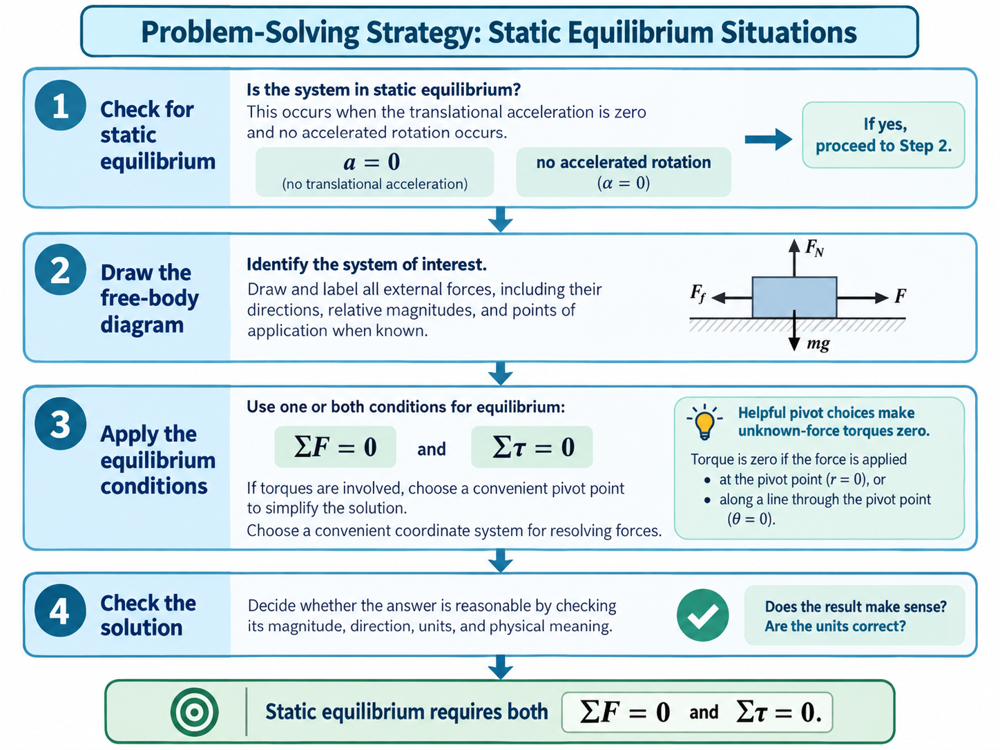
Fig. 8.10 Problem-solving strategy for static equilibrium situations. This flowchart summarizes a four-step approach for solving static-equilibrium problems. First, determine whether the system is in static equilibrium by checking that there is no translational acceleration and no accelerated rotation. Next, draw a free-body diagram for the system of interest and label the external forces. Then apply one or both equilibrium conditions, \(\sum \vec{F}=0\) and \(\sum \tau=0\), choosing a convenient pivot point when torques are involved. Finally, check that the result is physically reasonable and that the units are correct. Adapted from: OpenStax, College Physics 2e, Section 9.4.#
Let’s apply the problem-solving strategy for the pole vaulter in Figure 8.11. The pole is uniform and has a mass of \(5\)-\({\rm kg}\). In Fig. 8.11a, the pole’s center-of-gravity (\(\rm CG\)) lies halfway between the vaulter’s hands (and in the middle of the pole). The force exerted by each hand is equal to half the weight of the pole, or \(24.5\ {\rm N}\) (recall the large tension problem in Chapter 3). This satisfies the first condition for equilibrium (\(\vec{F}_{\rm net} = 0\)). The second condition (\(\vec{\tau}_{\rm net} = 0\)) is also satisfied, if we choose the \(\rm CG\) as the pivot point.
The weight exerts no torque about a pivot point located at the \(rm CG\) because its lever arm is zero.
The equal forces exerted by the hands are equidistant from the pivot. Thus,they provide equal and opposite torques.
In Fig. 8.11a, each hand exerts a force equal to half the weight of the pole, or \(F_{\rm R} = F_{\rm L} = w/2.\)
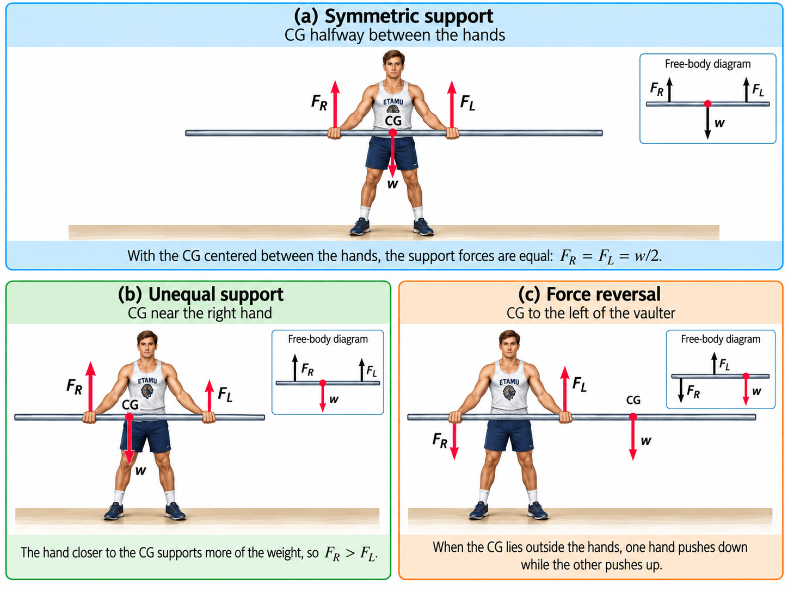
Fig. 8.11 Support forces for a horizontal uniform rod. In (a), the rod’s center of gravity (\(\rm CG\)) lies halfway between the vaulter’s hands, so the support forces are equal: \(F_R = F_L = w/2\). In (b), the \(\rm CG\) is closer to the right hand, so the right hand supports more of the rod’s weight and \(F_R > F_L\). In (c), the \(\rm CG\) lies outside the hands, so one hand pushes downward while the other pushes upward to maintain equilibrium. In panel (b) and (c), the rod extends farther to the right behind the free-body diagram. Adapted from: OpenStax, College Physics 2e, Figures 9.18–9.20.#
In Fig. 8.11b, the pole is shifted to the vaulter’s right so his right arm supports more of the weight and the forces on the hands are no longer equal. If the \(\rm CG\) moves to his left, so he must push down with his right and up with his left. The total force is still equal to weight of the pole, but it is not evenly divided. In Fig. 8.11c shows this scenario with the man holding one hand near the end of the pole, which results in a reversal of the applied force because the \(\rm CG\) is no longer between the hands.
8.5. Simple Machines#
Simple machines are devices that multiply (or augment) a force that we apply at the expense of a distance through which we apply the force. Levers, gears, pulleys, wedges, and screws are some examples of machines. Energy is still conserved for these devices because a machine cannot do more work than the energy put into it. However, machines can reduce the input force necessary. The mechanical advantage (\(\rm MA\)) is the ratio of output to input force magnitudes, or
where the \(F_{\rm o}\) is the output force magnitude and \(F_{\rm i}\) is the input force magnitude.
One of the simplest machines is the lever, which is a rigid bar pivoted at a fixed place called the fulcrum. Torques are involved in levers, since there is rotation about a pivot point. Distances from the physical pivot of the lever are crucial, where we can find a useful expression for the \(\rm MA\) in terms of these distances.
Fig. 8.12 A nail puller acts as a lever with a large mechanical advantage. The applied input force \(F_i\) acts downward on the handle, while the nail exerts a downward reaction force \(F_n\) on the puller. The supporting surface provides the normal force \(N\) at the pivot, so this force produces no torque about the pivot. The perpendicular lever arms of the input and output forces are \(l_i=r_{i\perp}\) and \(l_o=r_{o\perp}\), respectively. Because \(l_i\) is much larger than \(l_o\), a relatively small input force can produce a much larger output force \(F_o\) on the nail. Source: OpenStax, College Physics 2e, Figure 9.21.#
One of the simplest machines is the lever, which is a rigid bar that can rotate about a fixed point called the fulcrum. The key idea is that a force applied farther from the pivot can produce a larger torque than the same force applied closer to the pivot. This makes the distances from the pivot just as important as the magnitudes of the forces.
A familiar example is a seesaw. If the seesaw is balanced and remains at rest, then it satisfies the conditions for equilibrium. In that case, the clockwise and counterclockwise torques about the pivot must be equal in magnitude, so
This shows that a smaller force can balance a larger force if it acts at a greater distance from the pivot. That same idea is what gives a lever its mechanical advantage.
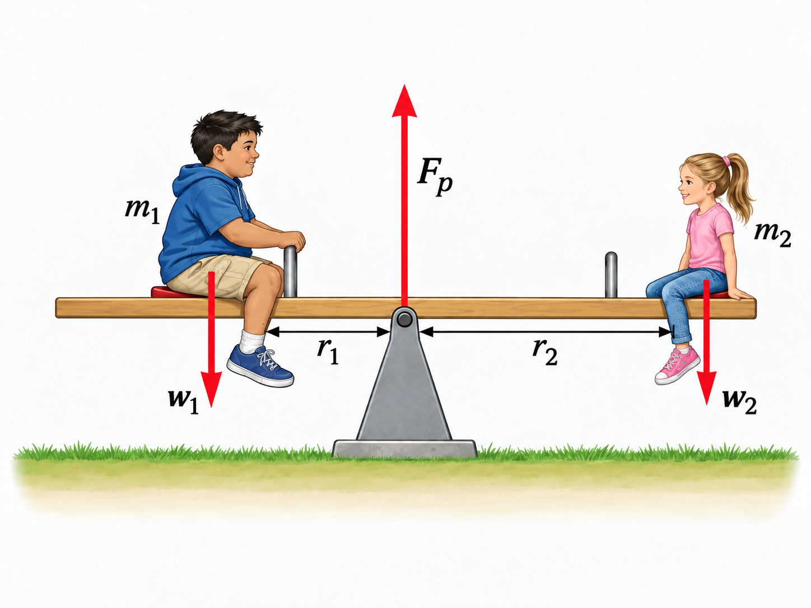
Fig. 8.13 A seesaw illustrates torque balance in a lever. Two children balance on a seesaw by satisfying both conditions for equilibrium. The upward support force acts at the pivot, while the children’s weights act downward at distances \(r_1\) and \(r_2\) from the pivot. The lighter child sits farther from the pivot so that the torque due to \(w_1\) balances the torque due to \(w_2\). Source: OpenStax, College Physics 2e, Figure 9.8.#
The seesaw and pry bar illustrate the same basic principle. A force acting farther from the pivot can balance, or overcome, a larger force acting closer to the pivot. For the balanced seesaw, this relationship follows directly from the condition that the net torque is zero.
Figure 8.12 shows the same principle applied to a lever used to pull a nail. Crowbars, seesaws, and other such levers are analogous because their behavior depends on the forces and their perpendicular distances from the pivot.
For the pry bar, we choose the pry bar itself as the system of interest. There are three vertical forces acting on this system: the input force \(\vec{F}_{\rm i}\) exerted by the hand, the reaction force \(\vec{F}_{\rm n}\) exerted by the nail on the pry bar, and the normal force \(\vec{N}\) exerted by the supporting surface at the pivot. The output force \(\vec{F}_{\rm o}\) is not a force acting on the pry bar. Instead, \(\vec{F}_{\rm o}\) is the force that the pry bar exerts on the nail.
The forces \(\vec{F}_{\rm n}\) and \(\vec{F}_{\rm o}\) form a Newton’s third-law pair, so they have equal magnitudes and opposite directions. The normal force \(\vec{N}\) produces no torque about the chosen pivot because it acts at the pivot.
A pry bar is intended to move the nail, rather than remain permanently in equilibrium. We therefore analyze the system at the threshold of motion, just before the nail begins to move. At this instant, the torques are balanced, so
Because \(F_{\rm n}=F_{\rm o}\) in magnitude, this becomes
We can group the forces on one side and the lever arms on the other to get
The ratio \(F_{\rm o}/F_{\rm i}\) is the mechanical advantage (\(\rm MA\)) of the lever. Because the input force is applied much farther from the pivot than the output force, \(l_{\rm i}\gg l_{\rm o}\), so the pry bar can exert a much larger force on the nail than the force applied by the hand. Once the input torque becomes slightly larger than the opposing torque, the pry bar rotates and the nail begins to move.
Two other types of levers that differ slightly from the nail puller are a wheel barrow and a shovel (see Figure 8.14). All these lever types are similar in that only three force are involved: (1) the input force, (2) the output force, and (3) the force on the pivot. Also there \(\rm MA\) (Eqn. (8.8)) are the same with the distances measured relative to the physical pivot.
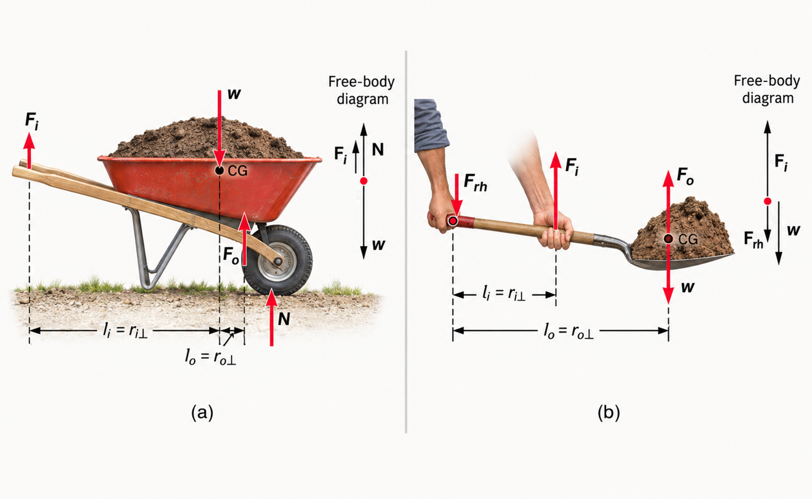
Fig. 8.14 Wheelbarrows and shovels are examples of levers. In (a), the wheelbarrow acts as a second-class lever, where the load lies between the pivot and the input force. This arrangement allows the output force to be greater than the input force. In (b), the shovel acts as a third-class lever, where the input force is applied between the pivot and the load. In this case, the output force is less than the input force, but the arrangement allows the load to move through a larger distance. Adapted from: OpenStax, College Physics 2e, Figure 9.22.#
The wheelbarrow and shovel differ from the pry bar because both the input and output force are on the same side of the pivot. In the case of the wheelbarrow, the output force (or load) is between the pivot (wheel’s axle) and the input (or applied force). In the case of the shovel, the input force is between the pivot (at the bottom of the handle) and the load, but the input lever arm is shorter than the output lever arm. In this case, the \(\rm MA\) is less than one.
8.6. Forces and Torques in Muscles and Joints#
8.7. In-Class Exercises#
8.7.1. Instructions#
You will use the final 20 minutes of class to begin the problems assigned for that class day. First, you must make a serious attempt on each assigned problem independently. After developing your own approach, you may compare ideas and discuss the problems with other students.
Each student must prepare and submit an individual solution. Organize each quantitative solution using the Problem–Model–Math–Conclusion format. Show your reasoning, equations, substitutions with units, and interpretation of the result. A numerical answer without supporting work is not a complete solution.
Open this page in Google Colab so you can easily copy the problems to the template without retyping them.
Export your completed Jupyter notebook as a PDF and submit the PDF to D2L by 11:59 p.m. CT on the day of class. The PDF filename must follow the format LastName_ChXX_SetY.pdf, where XX is the two-digit chapter number and Y is the problem-set number.
Make your own copy before beginning
A read-only Jupyter notebook template is available on D2L. Before entering any work, you must make your own editable copy of the notebook by selecting Save a copy in Drive.
Changes made directly to the read-only template cannot be saved. It does not matter how much work you enter: if you have not made your own copy, your changes will be lost. Confirm that you can rename and save your copy before beginning the problems.
8.7.2. Problems#
Problem 1
Problem 2
Problem 3
Problem 4
Problem 5
8.8. Homework#
8.8.1. Instructions#
Homework assignment
The homework is designed to give you regular practice applying the ideas developed in this chapter. A read-only Jupyter notebook template for the assignment is available on D2L. Before entering any work, you must make your own editable copy of the notebook. Changes made directly to the read-only template cannot be saved, so confirm that you can rename and save your copy before beginning.
There are two types of homework questions:
Conceptual questions: Copy the question into your notebook and answer it under a heading titled The Conclusion. Your response should be a paragraph that directly answers the question and explains the physical reasoning behind your answer. A Model or Math section is not required unless the question genuinely requires a calculation.
Quantitative questions: Copy the problem into your notebook and organize your solution using the Problem–Model–Math–Conclusion format. Identify the physical situation, assumptions, knowns, unknowns, and sign convention in the Model; develop and apply the necessary equations in the Math; and state, interpret, and check your result in the Conclusion. Include units in numerical substitutions.
The worked examples on the course webpage model the reasoning and solution style expected in your homework.
Don’t wait until the night it is due
Homework is much easier to manage when you complete a couple of problems at a time as you work through the chapter. This gives you time to identify concepts that you do not understand and ask questions before the due date. Trying to complete the entire assignment the night it is due usually leaves little time to diagnose mistakes or revisit the course material.
Submission
When your assignment is complete, export the Jupyter notebook as a PDF and submit the PDF to D2L by 11:59 p.m. CT on the due date.
Name your submitted file using the format LastName_ChXX_HW.pdf. Replace LastName with your last name and XX with the two-digit chapter number. For example, homework for Chapter 2 submitted by Jane Smith would be Smith_Ch02_HW.pdf.
Before submitting, open the PDF and make sure that all questions, equations, figures, and solutions are visible and readable.
8.8.2. Conceptual Questions#
Problem 1
Problem 2
8.8.3. Quantitative Questions#
Problem 3
Problem 4
Problem 5
Problem 6